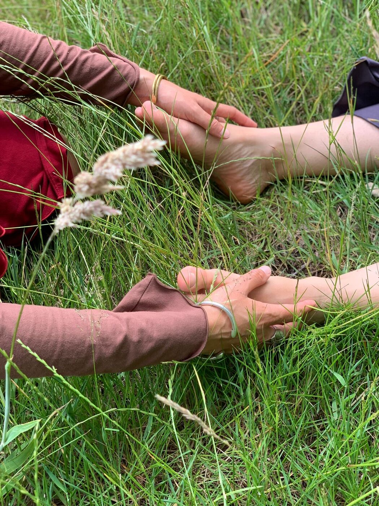
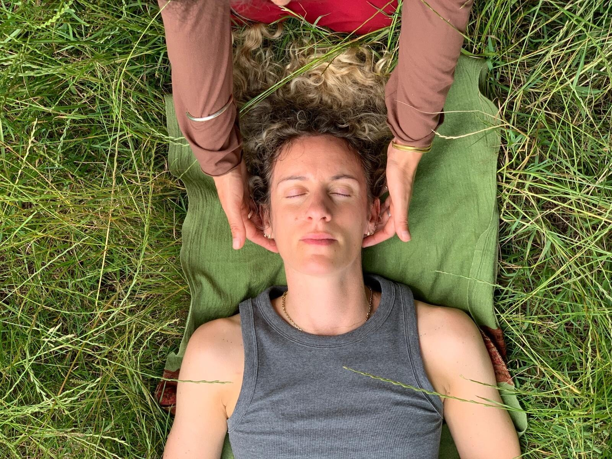
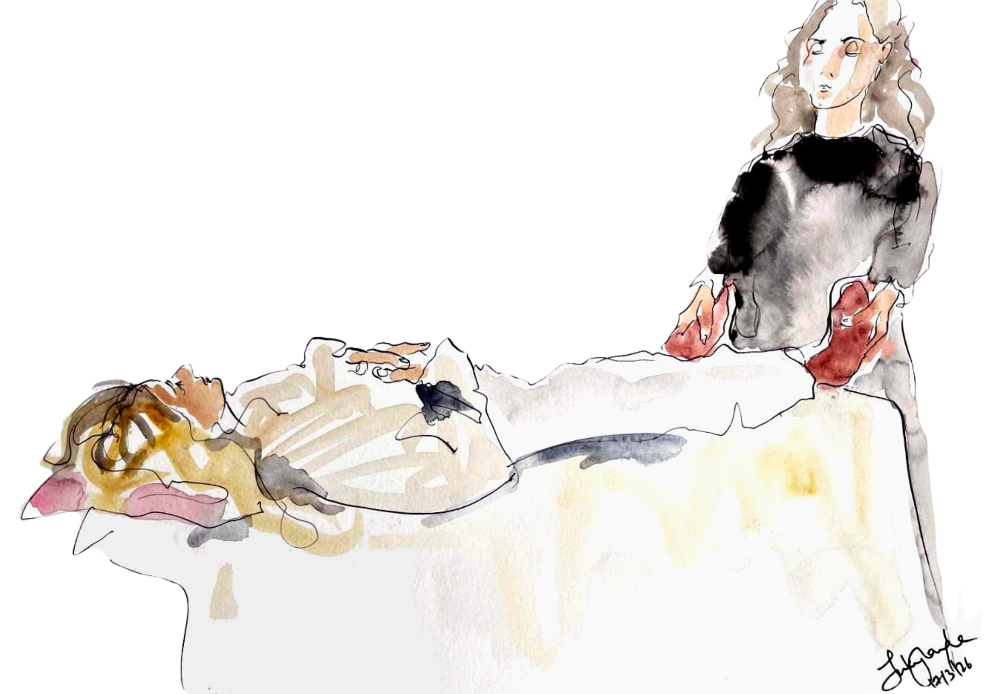

Craniosacral therapy is a gentle, heart-centred practice, which works with the innate intelligence of the body and its capacity for healing and transformation.


Craniosacral therapy works by creating a safe space where the body’s intelligence, and the heartfelt awareness of the practitioner, supports coming into physical, emotional, psychological and spiritual alignment. In listening and attuning to the whole person, identifying deeply ingrained patterns and facilitating profound releases we support a return to wholeness and health.
The foundational principle of Craniosacral therapy is that health is always present. By tuning into the body’s subtle rhythms we enhance circulation of craniosacral fluid, blood and lymph to support immune system function and enhance and maintain vitality, supporting integration and health.
Emily holds a deep appreciation for bodies and how we inhabit them and brings her capacity for stillness, listening and presence wholeheartedly to her work.
Through Craniosacral therapy, Emily helps us to come more fully into our aliveness, enabling a more expansive perspective and appreciation for life. This presence and groundedness supports us to come home to ourselves.
Trained at the College of Cranio-Sacral Therapy in London, Emily takes an integrative approach to treatment and draws from her massage training, yoga and Qigong practice, and interest in nutrition.
‘What is the body? That shadow of a shadow of your love, that somehow contains the whole universe’ - Rumi
Craniosacral therapy grew out of osteopathy in the early twentieth century, when practitioners began to notice a subtle, tidal motion expressing itself through the whole body — not only in the bones of the skull and the base of the spine, from which the work takes its name, but through the fluids and tissues.
What has been carried forward from that early noticing is less a technique than a way of paying attention. The hands rest lightly. Nothing is forced. The work is slow because the body sets the pace, and because what is subtle only becomes audible in stillness.
Physical or emotional stress can manifest as constriction, pain and dysfunction which inhibits the subtle rhythms of the body’s tissues and fluids. Working with the body’s rhythm and motion releases restriction and restores health and vitality.
Craniosacral therapy can be beneficial in treating a vast range of conditions, be it physical or emotional and is suitable for all ages, babies to the elderly.
Following an initial conversation and brief case history you will usually lie down fully clothed on the couch, covered by a blanket for comfort. The practitioner will then tune in to your system using light touch, following the whole body and its subtle rhythms to address tensions as they manifest.
People often find treatments profoundly relaxing and rebalancing. Your body determines where we work so that you remain in control and able to integrate what you are experiencing.
A CST session usually lasts up to one hour. People often report relief after just one or two sessions, but a series of treatments may be recommended, depending on your body’s needs.
There is never any obligation to book a course. Emily will talk through what she notices and you can decide from there.
Yes — it is suitable for those of all ages, from babies to the elderly. The touch used is very light throughout. Parents are welcome to stay close for the whole session, and babies are not expected to lie still or be quiet.
Patients are expected to attend appointments on time and give 24 hours’ notice if they need to change or cancel. In the rare case of Emily needing to cancel an appointment she will give a minimum of 24 hours’ notice.

This gentle, profound form of touch therapy invites us into deeper intimacy with ourselves, our lives and the world.
Emily is currently practicing in Portobello, Edinburgh at her private practice.
Please get in touch to make an appointment.
Your message has been sent to Emily. She’ll be in touch soon.